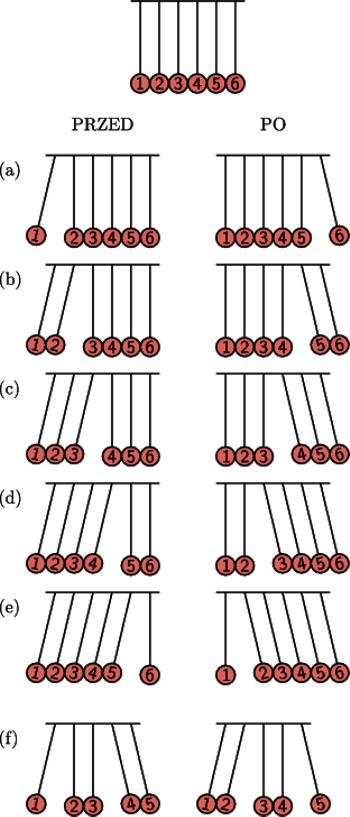

Wahadło Newtona
Kołyska Newtona, wahadło Newtona - przyrząd, który ilustruje prawo
zachowania pędu i energii podczas sprężystego zderzenia kul.
Opis działania
Na nitkach zawieszony jest rząd kilku stykających się ze sobą jednakowych stalowych kulek,
które mogą wykonywać wahania tylko w jednej, wspólnej płaszczyźnie (ilustracja).
Gdy jedna z nich zostanie odchylona i puszczona, jej uderzenie w pozostałe kulki spowoduje,
że po przeciwnej stronie szeregu odskoczy tylko ostatnia kulka. Jej wychylenie będzie
prawie takie samo jak pierwszej. Analogicznie, gdy podniesiemy i puścimy dwie kulki,
z drugiego końca odskoczą również dwie kule. Ogólnie rzecz biorąc - tyle samo kulek
odskoczy na końcu szeregu, ile odchylimy na jego początku, zaś pozostałe, środkowe kulki
pozostaną nieruchome.
Wahadło Newtona
Zderzenia kulek są prawie doskonale sprężyste. Przy takim zderzeniu zachowana jest
energia kinetyczna zderzających się ciał. Z zasady zachowania energii i zasady
zachowania pędu wynika, przy założeniu, że masy obu ciał są takie same, a pierwsze
ciało się poruszało, podczas gdy drugie było nieruchome, że po zderzeniu pierwsze
ciało zatrzymuje się, a drugie porusza z taką prędkością, jaką miało pierwsze ciało.
W ten sposób pęd przekazywany jest kolejnym kulkom, które przekazują go następnej,
zanim zaczną się poruszać. Dopiero ostatnia kulka, nie mogąc przekazać pędu dalej,
sama zaczyna się poruszać. Proces przekazywania pędu przebiega bardzo szybko,
niezauważalnie dla obserwatora. Dla stalowych kulek prędkość przekazu pędu równa
jest prędkości podłużnej fali mechanicznej w stali, czyli około 6 km/s.